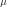
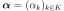
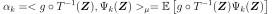

FunctionalChaosAlgorithm¶
- class FunctionalChaosAlgorithm(*args)¶
Functional chaos algorithm.
Refer to Functional Chaos Expansion, Least squares polynomial response surface.
- Available constructors:
FunctionalChaosAlgorithm(inputSample, outputSample)
FunctionalChaosAlgorithm(inputSample, outputSample, distribution, adaptiveStrategy)
FunctionalChaosAlgorithm(inputSample, outputSample, distribution, adaptiveStrategy, projectionStrategy)
FunctionalChaosAlgorithm(model, distribution, adaptiveStrategy)
FunctionalChaosAlgorithm(model, distribution, adaptiveStrategy, projectionStrategy)
FunctionalChaosAlgorithm(inputSample, weights, outputSample, distribution, adaptiveStrategy)
FunctionalChaosAlgorithm(inputSample, weights, outputSample, distribution, adaptiveStrategy, projectionStrategy)
- Parameters
- inputSample, outputSample2-d sequence of float
Sample of the input - output random vectors
- model
Function Model
 such as .
such as .- distribution
Distribution Distribution of the random vector

- adaptiveStrategy
AdaptiveStrategy Strategy of selection of the different terms of the multivariate basis.
- projectionStrategy
ProjectionStrategy Strategy of evaluation of the coefficients

- weightssequence of float
Weights associated to the data base
Default values are where N=inputSample.getSize()
See also
Notes
Consider with , and
 with finite variance:
.
with finite variance:
.When
 , the functional chaos algorithm is used on each marginal
of , using the same multivariate orthonormal basis for all the marginals.
Thus, the algorithm is detailed here for a scalar output
, the functional chaos algorithm is used on each marginal
of , using the same multivariate orthonormal basis for all the marginals.
Thus, the algorithm is detailed here for a scalar output  and
.
and
.Let be an isoprobabilistic transformation such that . We note , then .
Let be an orthonormal multivariate basis of .
Then the functional chaos decomposition of f writes:
which can be truncated to the finite set :
The approximation can be used to build an efficient random generator of
based on the random vector .
It writes:For more details, see
FunctionalChaosRandomVector.The functional chaos decomposition can be used to build a meta model of g, which writes:
If the basis has been obtained by tensorisation of univariate orthonormal basis, then the distribution  writes . In that case only, the Sobol indices can easily be deduced from the coefficients
.We detail here all the steps required in order to create a functional chaos algorithm.
Step 1 - Construction of the multivariate orthonormal basis: the multivariate orthonornal basis is built as the tensor product of orthonormal univariate families.
The univariate bases may be:
polynomials: the associated distribution
 is continuous or discrete.
Note that it is possible to build the polynomial family orthonormal to any univariate
distribution under some conditions.
For more details, see
is continuous or discrete.
Note that it is possible to build the polynomial family orthonormal to any univariate
distribution under some conditions.
For more details, see StandardDistributionPolynomialFactory;Haar wavelets: they enable to approximate functions with discontinuities. For more details, see
HaarWaveletFactory,;Fourier series: for more details, see
FourierSeriesFactory.
Furthermore, the numerotation of the multivariate orthonormal basis is given by an enumerate function which defines a regular way to generate the collection of degres used for the univariate polynomials : an enumerate function represents a bijection . See
LinearEnumerateFunctionorHyperbolicAnisotropicEnumerateFunctionfor more details.Step 2 - Truncation strategy of the multivariate orthonormal basis: a strategy must be chosen for the selection of the different terms of the multivariate basis. The selected terms are gathered in the subset K.
For more details on the possible strategies, see
FixedStrategy,SequentialStrategyandCleaningStrategy.Step 3 - Evaluation strategy of the coefficients: a strategy must be chosen for the estimation of te coefficients
.
The vector  is equivalently defined by:(1)¶
or
(2)¶
where the mean is evaluated with respect to the measure .
Relation (1) means that the coefficients
 minimize the quadratic error between the model and the polynomial approximation.
For more details, see
minimize the quadratic error between the model and the polynomial approximation.
For more details, see LeastSquaresStrategy.Relation (2) means that
is the scalar product of the
model with the k-th element of the orthonormal basis .
For more details, see IntegrationStrategy.Examples
Create the model:
>>> import openturns as ot >>> ot.RandomGenerator.SetSeed(0) >>> inputDim = 1 >>> model = ot.SymbolicFunction(['x'], ['x*sin(x)']) >>> distribution = ot.ComposedDistribution([ot.Uniform()]*inputDim)
Build the multivariate orthonormal basis:
>>> polyColl = [0.0]*inputDim >>> for i in range(distribution.getDimension()): ... polyColl[i] = ot.StandardDistributionPolynomialFactory(distribution.getMarginal(i)) >>> enumerateFunction = ot.LinearEnumerateFunction(inputDim) >>> productBasis = ot.OrthogonalProductPolynomialFactory(polyColl, enumerateFunction)
Define the strategy to truncate the multivariate orthonormal basis: We choose all the polynomials of degree <= 4
>>> degree = 4 >>> indexMax = enumerateFunction.getStrataCumulatedCardinal(degree) >>> print(indexMax) 5
We keep all the polynomials of degree <= 4 (which corresponds to the 5 first ones):
>>> adaptiveStrategy = ot.FixedStrategy(productBasis, indexMax)
Define the evaluation strategy of the coefficients:
>>> samplingSize = 50 >>> experiment = ot.MonteCarloExperiment(samplingSize) >>> projectionStrategy = ot.LeastSquaresStrategy(experiment)
Create the Functional Chaos Algorithm:
>>> algo = ot.FunctionalChaosAlgorithm(model, distribution, adaptiveStrategy, ... projectionStrategy) >>> algo.run()
Get the result:
>>> functionalChaosResult = algo.getResult() >>> metamodel = functionalChaosResult.getMetaModel()
Test it:
>>> X = [0.5] >>> print(model(X)) [0.239713] >>> print(metamodel(X)) [0.239514]
Methods
BuildDistribution(inputSample)Recover the distribution, with metamodel performance in mind.
Get the adaptive strategy.
Accessor to the object's name.
Accessor to the joint probability density function of the physical input vector.
getId()Accessor to the object's id.
Accessor to the input sample.
Get the maximum residual.
getName()Accessor to the object's name.
Accessor to the output sample.
Get the projection strategy.
Get the results of the metamodel computation.
Accessor to the object's shadowed id.
Accessor to the object's visibility state.
hasName()Test if the object is named.
Test if the object has a distinguishable name.
run()Compute the metamodel.
setDistribution(distribution)Accessor to the joint probability density function of the physical input vector.
setMaximumResidual(residual)Set the maximum residual.
setName(name)Accessor to the object's name.
setProjectionStrategy(projectionStrategy)Set the projection strategy.
setShadowedId(id)Accessor to the object's shadowed id.
setVisibility(visible)Accessor to the object's visibility state.
- __init__(*args)¶
- static BuildDistribution(inputSample)¶
Recover the distribution, with metamodel performance in mind.
For each marginal, find the best 1-d continuous parametric model else fallback to the use of a nonparametric one.
The selection is done as follow:
We start with a list of all parametric models (all factories)
For each model, we estimate its parameters if feasible.
We check then if model is valid, ie if its Kolmogorov score exceeds a threshold fixed in the MetaModelAlgorithm-PValueThreshold ResourceMap key. Default value is 5%
We sort all valid models and return the one with the optimal criterion.
For the last step, the criterion might be BIC, AIC or AICC. The specification of the criterion is done through the MetaModelAlgorithm-ModelSelectionCriterion ResourceMap key. Default value is fixed to BIC. Note that if there is no valid candidate, we estimate a non-parametric model (
KernelSmoothingorHistogram). The MetaModelAlgorithm-NonParametricModel ResourceMap key allows selecting the preferred one. Default value is HistogramOne each marginal is estimated, we use the Spearman independence test on each component pair to decide whether an independent copula. In case of non independence, we rely on a
NormalCopula.- Parameters
- sample
Sample Input sample.
- sample
- Returns
- distribution
Distribution Input distribution.
- distribution
- getAdaptiveStrategy()¶
Get the adaptive strategy.
- Returns
- adaptiveStrategy
AdaptiveStrategy Strategy of selection of the different terms of the multivariate basis.
- adaptiveStrategy
- getClassName()¶
Accessor to the object’s name.
- Returns
- class_namestr
The object class name (object.__class__.__name__).
- getDistribution()¶
Accessor to the joint probability density function of the physical input vector.
- Returns
- distribution
Distribution Joint probability density function of the physical input vector.
- distribution
- getId()¶
Accessor to the object’s id.
- Returns
- idint
Internal unique identifier.
- getInputSample()¶
Accessor to the input sample.
- Returns
- inputSample
Sample Input sample of a model evaluated apart.
- inputSample
- getMaximumResidual()¶
Get the maximum residual.
- Returns
- residualfloat
Residual value needed in the projection strategy.
Default value is
 .
.
- getName()¶
Accessor to the object’s name.
- Returns
- namestr
The name of the object.
- getOutputSample()¶
Accessor to the output sample.
- Returns
- outputSample
Sample Output sample of a model evaluated apart.
- outputSample
- getProjectionStrategy()¶
Get the projection strategy.
- Returns
- strategy
ProjectionStrategy Projection strategy.
- strategy
Notes
The projection strategy selects the different terms of the multivariate basis to define the subset K.
- getResult()¶
Get the results of the metamodel computation.
- Returns
- result
FunctionalChaosResult Result structure, created by the method
run().
- result
- getShadowedId()¶
Accessor to the object’s shadowed id.
- Returns
- idint
Internal unique identifier.
- getVisibility()¶
Accessor to the object’s visibility state.
- Returns
- visiblebool
Visibility flag.
- hasName()¶
Test if the object is named.
- Returns
- hasNamebool
True if the name is not empty.
- hasVisibleName()¶
Test if the object has a distinguishable name.
- Returns
- hasVisibleNamebool
True if the name is not empty and not the default one.
- run()¶
Compute the metamodel.
Notes
Evaluates the metamodel and stores all the results in a result structure.
- setDistribution(distribution)¶
Accessor to the joint probability density function of the physical input vector.
- Parameters
- distribution
Distribution Joint probability density function of the physical input vector.
- distribution
- setMaximumResidual(residual)¶
Set the maximum residual.
- Parameters
- residualfloat
Residual value needed in the projection strategy.
Default value is
.
- setName(name)¶
Accessor to the object’s name.
- Parameters
- namestr
The name of the object.
- setProjectionStrategy(projectionStrategy)¶
Set the projection strategy.
- Parameters
- strategy
ProjectionStrategy Strategy to estimate the coefficients
.
- strategy
- setShadowedId(id)¶
Accessor to the object’s shadowed id.
- Parameters
- idint
Internal unique identifier.
- setVisibility(visible)¶
Accessor to the object’s visibility state.
- Parameters
- visiblebool
Visibility flag.